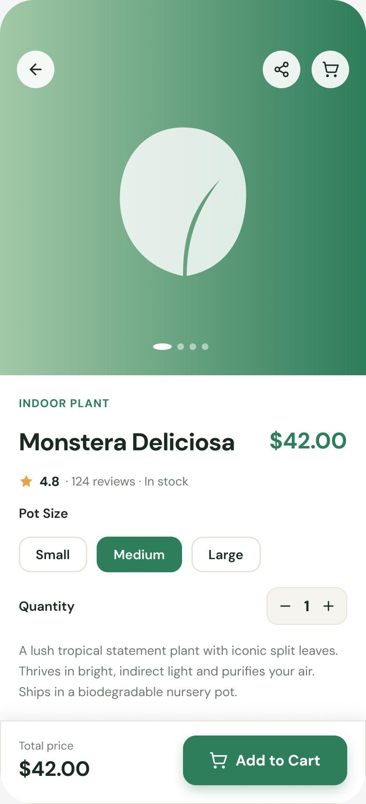

The Problem
Buying plants online is surprisingly stressful. First-time buyers can't tell which plant suits their light and lifestyle, so they hesitate, abandon carts, or buy the wrong thing and return it.
Generic product grids treat a low-light succulent the same as a fussy fern. Without guidance on care level, light needs and trust signals, people default to “I'll decide later” — and never come back.
How might we help first-time plant buyers find the right plant for their space — and buy it with confidence?
Goals & Success Metrics
Reduce decision anxiety and make the path from discovery to purchase calm and trustworthy.
- ◎Match, don't just listFilter by light & care level so the catalogue fits the person.
- ✓Earn trustRatings, care difficulty and sustainability shown clearly on every card.
- ⚡Frictionless mobile buyA confident product page with a sticky add-to-cart.
Target metrics: product findability > 85% · add-to-cart success > 90% · SUS > 80 · fewer “wrong plant” doubts.
User Research
Understanding how people actually choose plants — and what stops them.
Key findings
- 1People filter by lifestyle, not taxonomy“Low light”, “hard to kill”, “pet-safe” matter more than botanical categories.
- 2Trust drives the purchaseReviews and a visible care-difficulty rating were the strongest confidence signals.
- 3The mobile product page is the moment of truthDecisions happen there — it must answer every doubt without scrolling forever.
- 4Sustainability must be shownEco claims only build trust when concrete (carbon-neutral shipping, biodegradable pots).
Personas
Priya Nair
"I've killed two plants already. I just need something that survives my apartment and my schedule."
- Find low-maintenance, low-light plants
- Feel reassured it'll actually thrive
- No guidance on care difficulty
- Overwhelmed by huge catalogues
Ethan D'Souza
"I want plants that look considered and come from a brand that actually walks the sustainability talk."
- Curated, aesthetic pieces & planters
- Verify eco credentials quickly
- Vague “green” marketing
- Clunky checkout on mobile
User Flow — Discover to Purchase
Filtering by lifestyle sits at the heart of the journey, feeding a confident product page.
Wireframes
Low-fi layouts validated the filter-led listing and a single-decision product page before visual design.
Hi-Fi Design & Prototype
A calm, editorial storefront: a filter-led listing that matches people to plants, and a mobile product page that answers every doubt with a sticky add-to-cart.


Key design decisions
- ◆Lifestyle filtersCare level, light and pot colour surfaced first — the way people actually shop.
- ◆Trust on every cardRatings + review counts + free carbon-neutral shipping cues.
- ◆Sticky mobile add-to-cartPrice + CTA always in reach so the decision moment never scrolls away.
Usability Testing
6 participants, moderated + unmoderated, across the core shopping tasks.
Tasks: (1) “Find a low-light, easy-care plant under $50.” (2) “Add the Medium size to your cart.”
| Metric | Target | Result |
|---|---|---|
| Product findability | > 85% | 90% |
| Add-to-cart success | > 90% | 96% |
| Avg. decision time | ↓ vs. baseline | −38% |
| System Usability Scale | > 80 | 84 |
What testing changed
Care level was the top filter people looked for — but it was below the fold. → Promoted care & light filters to the top of the sidebar.
On mobile, size selection was missed. → Made size pills larger with a clearly selected state above the sticky CTA.
Results & Impact
Reflection & Next Steps
Designing around how people decide — by light and care, not botany — mattered more than any visual polish. Card sorting early prevented a category structure users would have rejected.
Next: a “find my plant” quiz for total beginners, AR “see it in your space”, and post-purchase care reminders to reduce plant death (and returns).